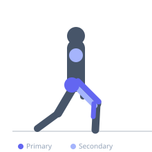
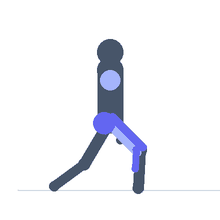

Exercise guide / Broad Jump
Broad Jump
The broad jump is a horizontal plyometric exercise in which the athlete uses an explosive two-legged takeoff to cover maximum horizontal distance. Unlike the vertical box jump, the broad jump trains the ability to project force at an angle, which closely mirrors the acceleration mechanics of sprinting and many field sport movements. It is used as both a training exercise and a standard assessment of lower body explosive power in sport science settings.
Primary muscles
rectus femoris
vastus lateralis
gluteus maximus
gastrocnemius medial
Secondary muscles
biceps femoris long head
deltoid anterior
Stabilizers
gluteus medius
transverse abdominis
Equipment
No Equipment (Bodyweight)


Starting position
- Stand with feet shoulder-width apart behind a takeoff line. Arms extended down at the sides.
Setup
- Use a flat, non-slip surface with enough landing space. Mark the takeoff point.
Steps
- Step 1: Stand at the takeoff line, feet shoulder-width apart.
- Step 2: Swing the arms back and sink into a quarter to half squat simultaneously.
- Step 3: Drive the arms forward and upward explosively while extending the hips, knees, and ankles to project the body forward and slightly upward.
- Step 4: Extend the legs forward during flight to maximize distance.
- Step 5: Land with both feet simultaneously, absorbing the impact by bending the hips, knees, and ankles. Maintain balance on landing.
Coaching cues
- Reach with the arms — swing them hard forward
- Extend fully at takeoff — hips, knees, ankles
- Reach the feet forward in flight
Breathing
- Exhale sharply at takeoff. Breathe freely during rest.
Range of motion
- Full extension at takeoff. Legs reach forward during flight. Soft, two-foot landing.
Tempo
- Maximum effort on each rep. 3–5 reps per set, full rest between sets.
Common mistakes
- Taking off at too steep an angle (too vertical) — optimal projection is approximately 45 degrees
- Not fully extending at takeoff — a partial extension leaves horizontal power on the table
- Landing with stiff legs — this increases injury risk
Safety
- Ensure the landing zone is clear and has adequate floor space.
- Avoid on slippery surfaces.
Training
- power: 3–6 reps
- power: 3–5 sets
- Rest: {'power': 120}